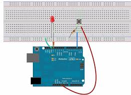

Create a toggle switch from a momentary button! Press once to turn ON, press again to turn OFF. This teaches state variables and the critical skill of button debouncing.
1. Concept and Description
In this project, we will explore the following concepts:
Using state variables to remember LED status
Edge detection - detecting button press vs. button held
Button debouncing - preventing false triggers
Toggle logic with boolean variables
2. Components Needed
(1) Arduino Uno
(1) LED
(1) Push Button
(1) 220Ω Resistor
(1) 10kΩ Resistor
(1) Breadboard
(6+) Jumper Wires
3. Physical Montage (Wiring Instructions)

Pin Connections:
Arduino Pin
Component
Pin 13
LED anode (+) via 220Ω resistor
Pin 2
Button output (one leg)
5V
Button input (other leg)
GND
LED cathode (-), 10kΩ to button output
4. The Code (Arduino Sketch)
Copy and paste the code below into your Arduino IDE.
/*
* Project #7: Push-to-Toggle LED (Latching Button)
* The Arduino Student Lab
*
* Press button once = LED ON
* Press button again = LED OFF
* Includes debouncing for reliable operation
*/
// ============================================
// PIN DEFINITIONS
// ============================================
const int BUTTON_PIN = 2;
const int LED_PIN = 13;
// ============================================
// DEBOUNCE CONFIGURATION
// ============================================
const unsigned long DEBOUNCE_DELAY = 50; // milliseconds
// ============================================
// STATE VARIABLES
// ============================================
bool ledState = false; // Current LED state (on/off)
bool buttonState = false; // Current debounced button reading
bool lastButtonState = false; // Previous button reading
unsigned long lastDebounceTime = 0; // Last time button changed
// ============================================
// SETUP - Runs once at startup
// ============================================
void setup() {
pinMode(BUTTON_PIN, INPUT);
pinMode(LED_PIN, OUTPUT);
// Ensure LED starts OFF
digitalWrite(LED_PIN, LOW);
Serial.begin(9600);
Serial.println("Toggle Button Ready!");
Serial.println("Press to toggle LED state.");
}
// ============================================
// MAIN LOOP - Runs repeatedly
// ============================================
void loop() {
// Read the current button state
bool reading = digitalRead(BUTTON_PIN);
// Check if button state changed (noise or real press)
if (reading != lastButtonState) {
// Reset the debounce timer
lastDebounceTime = millis();
}
// If enough time has passed, the reading is stable
if ((millis() - lastDebounceTime) > DEBOUNCE_DELAY) {
// If button state actually changed
if (reading != buttonState) {
buttonState = reading;
// Only toggle on button PRESS (not release)
// This is called "edge detection"
if (buttonState == HIGH) {
// Toggle the LED state
ledState = !ledState;
// Apply the new state
digitalWrite(LED_PIN, ledState);
// Debug output
Serial.print("Button pressed! LED is now: ");
Serial.println(ledState ? "ON" : "OFF");
}
}
}
// Save reading for next loop iteration
lastButtonState = reading;
}
/*
* WHY DEBOUNCING?
*
* Mechanical buttons "bounce" when pressed - they rapidly
* connect/disconnect for a few milliseconds. Without debouncing,
* one press might register as 5-10 presses!
*
* The debounce algorithm:
* 1. When button changes, start a timer
* 2. Wait for signal to be stable for DEBOUNCE_DELAY ms
* 3. Only then accept the new state
*
* WHY EDGE DETECTION?
*
* We only want to toggle once per press, not continuously
* while the button is held down. By checking if buttonState
* CHANGED to HIGH (rising edge), we only act once per press.
*/
5. Explanation & Challenges
🔍 How It Works
State Variables:ledState remembers if LED should be on/off between loop cycles.
Debouncing: We wait 50ms after any change before accepting the new button state.
Edge Detection: We only toggle when buttonState changes TO HIGH (press), not when released.
Toggle Logic:ledState = !ledState flips true→false or false→true.
🚀 Challenges
Long Press: Hold button for 2 seconds to blink LED rapidly.
Multiple LEDs: Each press cycles through: OFF → LED1 → LED2 → LED3 → OFF.
Double Click: Detect double-click to trigger a different action.
Save State: Use EEPROM to remember LED state after power off.